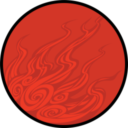

 Ōkami
Details
| Playtime | Not Played |
| Last Activity | Never |
| Added | 21/02/2024 3:22:44 |
| Modified | 20/05/2024 22:32:56 |
| Completion Status | Not Played |
| Library | Playnite |
| Source | |
| Platform | Sony PlayStation 2 |
| Release Date | 20/04/2006 |
| Community Score | 87 |
| Critic Score | 90 |
| User Score | 0 |
| Genre | Action-adventure |
| Developer | Clover Studio |
| Publisher | Capcom |
| Feature | Single Player |
| Links | |
| Tag | |
Description
Set in a fictional version of classical Japan called "Nippon", Ōkami combines Japanese mythology and folklore to tell the story of how the land was saved from darkness by the Shinto sun goddess Amaterasu, who took the form of a white wolf. It features a sumi-e-inspired cel-shaded visual style and the Celestial Brush, a gesture-system to perform miracles. The game was planned to use more traditional realistic rendering, but this had put a strain on the graphics processing of the PlayStation 2. Clover Studio switched to a cel-shaded style to reduce the processing, which led to the Celestial Brush concept. The gameplay is modeled on The Legend of Zelda, one of director Hideki Kamiya's favorite series. The game's name is a pun, as "ōkami" can mean either "great god" (大神) or "wolf" (狼) in Japanese.
Ōkami was one of the last PlayStation 2 games released prior to the release of the PlayStation 3. Although it suffered from poor sales, the game received critical acclaim, earning IGN's 2006 Game of the Year. The Wii version earned similar praise, though the motion control scheme received mixed reviews. A high-definition port, remastered by Capcom and HexaDrive, was released on the PlayStation 3 via the PlayStation Network in October 2012 and for retail in Japan in November, supporting the use of the PlayStation Move motion controller. The port was released for PlayStation 4, Windows, and Xbox One in December 2017 worldwide, for the Nintendo Switch in August 2018, and for Amazon Luna in April 2022. Mainstream adoption of the game has improved with the release of these remasters, and Ōkami is considered to be one of the best video games ever made, as well as an example of video games as an art form, aided by the improved art details and graphics resolutions.
A spiritual successor on the Nintendo DS, Ōkamiden, was released in Japan in September 2010, followed by North America and Europe in March 2011.